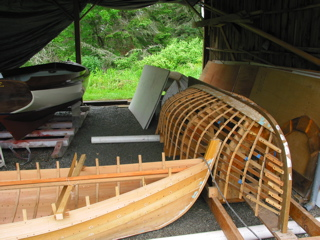
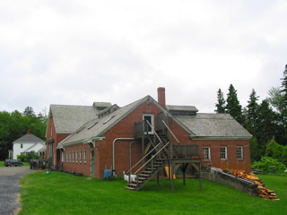

No rain this day, but some heavy mist, and cold. Very cold. Was up early again, I'm pretty sure I can hear when the cook starts the stove to make coffee. (They had very good coffee on board, definitely worth getting up for.) Anchor dug itself in good over night, it was a lot of work to get it out. Sailed under a suspension bridge. The perspective making it look like the top of the masts were about to hit the bridge.
After dropping anchor, we scooted to shore to check out the Wooden Boat School. Pretty neat place.
 